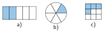

📝 Repaso de la unidad
Actividades de repaso
Escribe tu respuesta y después pulsa «Ver la solución» para corregirla tú. Los puntos dicen el nivel: ● básico, ●●● ampliación.
- Escribe con números: tres quintos.
- Escribe con números: siete doceavos.
- Escribe con letras: \(\dfrac{4}{9}\)
- Escribe con letras: \(\dfrac{5}{100}\)
Solución
a) \(\dfrac{3}{5}\) b) \(\dfrac{7}{12}\) c) Cuatro novenos. d) Cinco centésimos.
¿Cómo te ha ido?
Clasifica las fracciones en propias o impropias. Escribe las impropias como un número entero más una fracción propia.
- \(\dfrac{3}{4}\)
- \(\dfrac{7}{5}\)
- \(\dfrac{9}{9}\)
- \(\dfrac{12}{7}\)
- \(\dfrac{2}{11}\)
Solución
Propias: \(\frac{3}{4}\) y \(\frac{2}{11}\). Impropias: \(\frac{7}{5} = 1 + \frac{2}{5}\); \(\frac{9}{9} = 1\); \(\frac{12}{7} = 1 + \frac{5}{7}\).
¿Cómo te ha ido?
En una hoja de cálculo escribe los números del 1 al 20 en la columna A. En B1 escribe =A1/(A1+1) y arrastra la fórmula. Así obtienes \(\frac{1}{2}, \frac{2}{3}, \frac{3}{4}\ldots\)
- ¿Las fracciones crecen o decrecen?
- ¿A qué número se acercan? ¿Llegan a alcanzarlo?
Solución
- Crecen.
- Se acercan a 1, pero no llegan.
¿Cómo te ha ido?
Escribe la fracción coloreada y la fracción sin colorear de cada figura.

Solución
a) \(\frac{2}{5}\) y \(\frac{3}{5}\) b) \(\frac{1}{6}\) y \(\frac{5}{6}\) c) \(\frac{4}{9}\) y \(\frac{5}{9}\)
¿Cómo te ha ido?
Representa cada fracción en un rectángulo dividido en partes iguales.
- \(\dfrac{3}{8}\)
- \(\dfrac{4}{5}\)
- \(\dfrac{1}{3}\)
- \(\dfrac{5}{4}\)
Solución
a) 8 partes, 3 coloreadas. b) 5 partes, 4 coloreadas. c) 3 partes, 1 coloreada. d) Dos rectángulos de 4 partes: uno entero y 1 parte del otro.
¿Cómo te ha ido?
En una caja de 12 huevos se han roto 5. ¿Qué fracción de los huevos se ha roto? ¿Qué significan el numerador y el denominador?
Solución
\(\frac{5}{12}\). El numerador, 5, son los huevos rotos; el denominador, 12, los huevos que tiene la caja.
¿Cómo te ha ido?
Expresa con una fracción y simplifica si se puede.
- 3 días de una semana
- 7 meses de un año
- 5 horas de un día
- 30 céntimos de un euro
Solución
a) \(\frac{3}{7}\) b) \(\frac{7}{12}\) c) \(\frac{5}{24}\) d) \(\frac{30}{100} = \frac{3}{10}\)
¿Cómo te ha ido?
- \(\dfrac{2}{7}\)
- \(\dfrac{9}{10}\)
- \(\dfrac{11}{15}\)
- \(\dfrac{13}{20}\)
Solución
a) Dos séptimos. b) Nueve décimos. c) Once quinceavos. d) Trece veinteavos.
¿Cómo te ha ido?
Escribe \(<\), \(>\) o \(=\) entre cada fracción y 1.
- \(\dfrac{5}{7}\)
- \(\dfrac{8}{8}\)
- \(\dfrac{9}{5}\)
- \(\dfrac{15}{16}\)
Solución
a) \(<\) b) \(=\) c) \(>\) d) \(<\)
¿Cómo te ha ido?
Escribe cada fracción como un número entero más una fracción propia.
- \(\dfrac{11}{4}\)
- \(\dfrac{17}{5}\)
- \(\dfrac{23}{6}\)
- \(\dfrac{30}{7}\)
Solución
a) \(2 + \frac{3}{4}\) b) \(3 + \frac{2}{5}\) c) \(3 + \frac{5}{6}\) d) \(4 + \frac{2}{7}\)
¿Cómo te ha ido?
Escribe como una sola fracción.
- \(2 + \dfrac{2}{3}\)
- \(3 + \dfrac{3}{4}\)
- \(1 + \dfrac{5}{8}\)
- \(4 + \dfrac{2}{5}\)
Solución
a) \(\frac{8}{3}\) b) \(\frac{15}{4}\) c) \(\frac{13}{8}\) d) \(\frac{22}{5}\)
¿Cómo te ha ido?
Dibuja una recta, divide cada unidad en cuatro partes iguales y representa \(\frac{1}{4}\), \(\frac{3}{4}\), \(\frac{5}{4}\) y \(\frac{3}{2}\).
Solución
\(\frac{1}{4}\) y \(\frac{3}{4}\), en la primera y tercera marca entre 0 y 1; \(\frac{5}{4}\), en la primera marca después del 1; \(\frac{3}{2} = \frac{6}{4}\), en el punto medio entre 1 y 2.
¿Cómo te ha ido?
Una tableta de chocolate tiene 4 filas de 6 onzas. Marta se come 2 filas enteras y 3 onzas más. ¿Qué fracción de la tableta se ha comido? ¿Qué fracción queda? Simplifica.
Solución
Se ha comido \(\frac{15}{24} = \frac{5}{8}\); quedan \(\frac{9}{24} = \frac{3}{8}\).
¿Cómo te ha ido?
Hugo dice que en esta figura está coloreado \(\frac{1}{3}\) porque hay una parte coloreada de tres. ¿Tiene razón? ¿Qué fracción está coloreada?
Solución
No: las tres partes no son iguales. Está coloreado \(\frac{1}{2}\).
¿Cómo te ha ido?
Una barra de 4 cuadraditos iguales representa \(\frac{2}{3}\) de la unidad.
- ¿Cuántos cuadraditos tiene la unidad? Dibújala.
- ¿Y si la barra de 4 cuadraditos fuera \(\frac{4}{5}\) de la unidad?
Solución
- Cada tercio son 2 cuadraditos: la unidad tiene 6.
- Cada quinto es 1 cuadradito: la unidad tiene 5.
¿Cómo te ha ido?
- \(\dfrac{3}{5}\) de 40
- \(\dfrac{5}{6}\) de 72
- \(\dfrac{2}{9}\) de 180
- \(\dfrac{9}{4}\) de 20
Solución
a) \(24\) b) \(60\) c) \(40\) d) \(45\)
¿Cómo te ha ido?
El depósito de un coche tiene 60 litros y está a \(\dfrac{3}{4}\) de su capacidad. ¿Cuántos litros tiene?
Solución
45 litros
¿Cómo te ha ido?
- \(\dfrac{2}{3}\) de 45
- \(\dfrac{5}{8}\) de 96
- \(\dfrac{3}{10}\) de 350
- \(\dfrac{7}{4}\) de 48
Solución
a) 30 b) 60 c) 105 d) 84
¿Cómo te ha ido?
Una tienda rebaja todos sus artículos en \(\frac{2}{5}\) de su precio. Escribe en la columna A de una hoja de cálculo los precios 60, 90, 150 y 240 €. En B1 escribe =A1*2/5 y en C1 =A1-B1; arrastra ambas fórmulas.
- ¿Qué calcula cada columna? Escribe los resultados.
- ¿Qué fracción del precio inicial se paga? Escribe una fórmula que lo calcule directamente.
Solución
- B, la rebaja: 24, 36, 60 y 96 €. C, el precio final: 36, 54, 90 y 144 €.
- \(\frac{3}{5}\):
=A1*3/5.
¿Cómo te ha ido?
- \(\dfrac{1}{2}\) de 50
- \(\dfrac{1}{3}\) de 60
- \(\dfrac{1}{4}\) de 100
- \(\dfrac{1}{5}\) de 35
- \(\dfrac{1}{10}\) de 90
- \(\dfrac{1}{6}\) de 42
Solución
a) 25 b) 20 c) 25 d) 7 e) 9 f) 7
¿Cómo te ha ido?
- \(\dfrac{4}{7}\) de 63
- \(\dfrac{3}{8}\) de 200
- \(\dfrac{7}{12}\) de 144
- \(\dfrac{11}{10}\) de 50
Solución
a) 36 b) 75 c) 84 d) 55
¿Cómo te ha ido?
En una clase de 24 alumnos, \(\dfrac{5}{8}\) son chicas. ¿Cuántas chicas hay? ¿Y cuántos chicos?
Solución
15 chicas y 9 chicos.
¿Cómo te ha ido?
- ¿Cuántos minutos son \(\frac{2}{3}\) de hora?
- ¿Cuántos minutos son \(\frac{5}{6}\) de hora?
- ¿Cuántas horas son \(\frac{3}{4}\) de día?
- ¿Cuántos minutos son \(\frac{3}{5}\) de hora?
Solución
a) 40 min b) 50 min c) 18 h d) 36 min
¿Cómo te ha ido?
Leire tiene 150 € ahorrados y gasta \(\dfrac{2}{5}\) en unas zapatillas. ¿Cuánto le cuestan? ¿Cuánto dinero le queda?
Solución
60 €; le quedan 90 €.
¿Cómo te ha ido?
De los 180 alumnos de 1º ESO, \(\dfrac{7}{9}\) van a la excursión al parque de Cabárceno. ¿Cuántos alumnos van? ¿Cuántos se quedan?
Solución
Van 140 y se quedan 40.
¿Cómo te ha ido?
Calcula paso a paso.
- \(\dfrac{1}{2}\) de \(\dfrac{1}{3}\) de 60
- \(\dfrac{2}{3}\) de \(\dfrac{3}{4}\) de 80
- \(\dfrac{3}{5}\) de \(\dfrac{5}{6}\) de 120
Solución
a) 10 b) 40 c) 60
¿Cómo te ha ido?
Un libro tiene 240 páginas. Leo lee \(\frac{1}{4}\) del libro el lunes y \(\frac{3}{8}\) el martes. ¿Cuántas páginas lee cada día? ¿Cuántas le faltan?
Solución
Lunes, 60; martes, 90. Le faltan 90 páginas.
¿Cómo te ha ido?
Usa la calculadora.
- \(\dfrac{7}{16}\) de 1 248
- \(\dfrac{13}{25}\) de 3 750
- \(\dfrac{5}{9}\) de 2 457
Solución
a) 546 b) 1 950 c) 1 365
¿Cómo te ha ido?
- ¿Qué es mayor, \(\frac{2}{3}\) de 90 o \(\frac{3}{4}\) de 80?
- ¿Qué es mayor, \(\frac{4}{5}\) de 75 o \(\frac{5}{6}\) de 78?
Solución
- Son iguales: las dos valen 60.
- \(\frac{5}{6}\) de 78, que es 65, frente a 60.
¿Cómo te ha ido?
- \(\dfrac{2}{3}\) y \(\dfrac{10}{15}\)
- \(\dfrac{3}{4}\) y \(\dfrac{9}{16}\)
- \(\dfrac{5}{2}\) y \(\dfrac{20}{8}\)
Solución
a) Sí b) No c) Sí
¿Cómo te ha ido?
- \(\dfrac{3}{7} = \dfrac{x}{21}\)
- \(\dfrac{4}{x} = \dfrac{12}{15}\)
- \(\dfrac{x}{6} = \dfrac{10}{12}\)
Solución
a) \(9\) b) \(5\) c) \(5\)
¿Cómo te ha ido?
- \(\dfrac{12}{18}\)
- \(\dfrac{35}{50}\)
- \(\dfrac{48}{64}\)
- \(\dfrac{75}{100}\)
Solución
a) \(\dfrac{2}{3}\) b) \(\dfrac{7}{10}\) c) \(\dfrac{3}{4}\) d) \(\dfrac{3}{4}\)
¿Cómo te ha ido?
¿Qué fracción de hora es cada tiempo? Simplifica.
- 15 minutos
- 20 minutos
- 45 minutos
- 10 minutos
Solución
a) \(\dfrac{1}{4}\) b) \(\dfrac{1}{3}\) c) \(\dfrac{3}{4}\) d) \(\dfrac{1}{6}\)
¿Cómo te ha ido?
- \(\dfrac{1}{2}\), \(\dfrac{2}{3}\) y \(\dfrac{5}{6}\)
- \(\dfrac{3}{4}\), \(\dfrac{5}{8}\) y \(\dfrac{7}{12}\)
Solución
- \(\dfrac{3}{6}\), \(\dfrac{4}{6}\) y \(\dfrac{5}{6}\)
- \(\dfrac{18}{24}\), \(\dfrac{15}{24}\) y \(\dfrac{14}{24}\)
¿Cómo te ha ido?
- \(\dfrac{18}{24}\)
- \(\dfrac{45}{60}\)
- \(\dfrac{56}{84}\)
- \(\dfrac{125}{1\,000}\)
Solución
a) \(\dfrac{3}{4}\) b) \(\dfrac{3}{4}\) c) \(\dfrac{2}{3}\) d) \(\dfrac{1}{8}\)
¿Cómo te ha ido?
\(\dfrac{5}{6}\), \(\dfrac{3}{4}\), \(\dfrac{7}{12}\), \(\dfrac{2}{3}\)
Solución
\(\dfrac{7}{12} < \dfrac{2}{3} < \dfrac{3}{4} < \dfrac{5}{6}\)
¿Cómo te ha ido?
Usa la calculadora para escribir cada fracción como número decimal y ordénalas de menor a mayor.
- \(\dfrac{5}{8}\)
- \(\dfrac{7}{11}\)
- \(\dfrac{3}{5}\)
- \(\dfrac{2}{3}\)
Solución
\(\frac{3}{5} < \frac{5}{8} < \frac{7}{11} < \frac{2}{3}\)
¿Cómo te ha ido?
Escribe tres fracciones comprendidas entre \(\frac{2}{3}\) y \(\frac{3}{4}\). ¿Cuántas fracciones hay entre ellas?
Solución
Por ejemplo \(\frac{41}{60}\), \(\frac{7}{10}\) y \(\frac{43}{60}\). Hay infinitas.
¿Cómo te ha ido?
- Escribe tres fracciones comprendidas entre \(\frac{1}{3}\) y \(\frac{1}{2}\).
- ¿Existe una fracción que sea la siguiente a \(\frac{1}{3}\), sin ninguna otra entre las dos? Explica por qué.
Solución
- Por ejemplo, \(\frac{9}{24}\), \(\frac{10}{24}\) y \(\frac{11}{24}\).
- No.
¿Cómo te ha ido?
Si sumas 1 al numerador y al denominador de una fracción, ¿la fracción aumenta o disminuye? Prueba con \(\frac{2}{3}\), \(\frac{1}{5}\) y \(\frac{5}{3}\) y saca una conclusión.
Solución
Las propias aumentan y las impropias disminuyen.
¿Cómo te ha ido?
Escribe tres fracciones equivalentes a cada una amplificando.
- \(\dfrac{2}{5}\)
- \(\dfrac{3}{7}\)
- \(\dfrac{5}{4}\)
Solución
Por ejemplo: a) \(\frac{4}{10}\), \(\frac{6}{15}\), \(\frac{8}{20}\) b) \(\frac{6}{14}\), \(\frac{9}{21}\), \(\frac{12}{28}\) c) \(\frac{10}{8}\), \(\frac{15}{12}\), \(\frac{20}{16}\)
¿Cómo te ha ido?
Escribe \(<\) o \(>\).
- \(\dfrac{5}{9} \;\square\; \dfrac{7}{9}\)
- \(\dfrac{3}{5} \;\square\; \dfrac{3}{8}\)
- \(\dfrac{11}{12} \;\square\; \dfrac{7}{12}\)
- \(\dfrac{2}{7} \;\square\; \dfrac{2}{3}\)
Solución
a) \(<\) b) \(>\) c) \(>\) d) \(<\)
¿Cómo te ha ido?
Escribe \(<\) o \(>\) reduciendo a común denominador.
- \(\dfrac{2}{3} \;\square\; \dfrac{3}{5}\)
- \(\dfrac{5}{8} \;\square\; \dfrac{7}{12}\)
- \(\dfrac{4}{9} \;\square\; \dfrac{1}{2}\)
- \(\dfrac{9}{10} \;\square\; \dfrac{11}{12}\)
Solución
a) \(>\) b) \(>\) c) \(<\) d) \(<\)
¿Cómo te ha ido?
\(\dfrac{3}{10}\), \(\dfrac{2}{5}\), \(\dfrac{1}{4}\), \(\dfrac{7}{20}\)
Solución
\(\frac{2}{5} > \frac{7}{20} > \frac{3}{10} > \frac{1}{4}\)
¿Cómo te ha ido?
- Halla la fracción equivalente a \(\frac{3}{4}\) con denominador 28.
- Halla la fracción equivalente a \(\frac{2}{9}\) con numerador 10.
- Halla la fracción equivalente a \(\frac{18}{30}\) con denominador 5.
Solución
a) \(\frac{21}{28}\) b) \(\frac{10}{45}\) c) \(\frac{3}{5}\)
¿Cómo te ha ido?
Iván ha leído \(\frac{5}{8}\) de su libro y Sara \(\frac{7}{10}\) del suyo. ¿Quién ha leído una parte mayor de su libro?
Solución
Sara: \(\frac{5}{8} = \frac{25}{40} < \frac{28}{40} = \frac{7}{10}\).
¿Cómo te ha ido?
Busca una fracción equivalente a \(\frac{2}{3}\) cuyo numerador y denominador sumen 40.
Solución
\(\frac{16}{24}\)
¿Cómo te ha ido?
- \(\dfrac{4}{9} + \dfrac{2}{9}\)
- \(\dfrac{3}{4} + \dfrac{1}{8}\)
- \(\dfrac{5}{6} - \dfrac{2}{9}\)
- \(3 - \dfrac{4}{5}\)
Solución
a) \(\dfrac{2}{3}\) b) \(\dfrac{7}{8}\) c) \(\dfrac{11}{18}\) d) \(\dfrac{11}{5}\)
¿Cómo te ha ido?
- \(\dfrac{1}{2} + \dfrac{2}{3} - \dfrac{3}{4}\)
- \(\dfrac{3}{5} - \dfrac{1}{10} + \dfrac{1}{2}\)
Solución
a) \(\dfrac{5}{12}\) b) \(1\)
¿Cómo te ha ido?
Alba ha hecho esta suma: \(\dfrac{1}{3} + \dfrac{2}{5} = \dfrac{3}{8}\). Explica el error y calcula el resultado correcto.
Solución
\(\frac{1}{3} + \frac{2}{5} = \frac{11}{15}\)
¿Cómo te ha ido?
- \(\dfrac{2}{3} + \dfrac{1}{4}\)
- \(\dfrac{5}{6} - \dfrac{3}{8}\)
- \(\dfrac{1}{2} + \dfrac{2}{5} - \dfrac{3}{10}\)
- \(3 - \dfrac{5}{4}\)
Solución
a) \(\dfrac{11}{12}\) b) \(\dfrac{11}{24}\) c) \(\dfrac{3}{5}\) d) \(\dfrac{7}{4}\)
¿Cómo te ha ido?
Calcula y simplifica.
- \(\dfrac{2}{11} + \dfrac{5}{11}\)
- \(\dfrac{9}{10} - \dfrac{3}{10}\)
- \(\dfrac{1}{8} + \dfrac{3}{8} + \dfrac{1}{8}\)
- \(\dfrac{13}{15} - \dfrac{8}{15}\)
Solución
a) \(\frac{7}{11}\) b) \(\frac{3}{5}\) c) \(\frac{5}{8}\) d) \(\frac{1}{3}\)
¿Cómo te ha ido?
Calcula y simplifica.
- \(\dfrac{1}{5} + \dfrac{1}{2}\)
- \(\dfrac{3}{4} - \dfrac{2}{3}\)
- \(\dfrac{5}{8} + \dfrac{1}{6}\)
- \(\dfrac{7}{9} - \dfrac{1}{3}\)
Solución
a) \(\frac{7}{10}\) b) \(\frac{1}{12}\) c) \(\frac{19}{24}\) d) \(\frac{4}{9}\)
¿Cómo te ha ido?
- \(1 + \dfrac{2}{5}\)
- \(4 - \dfrac{1}{3}\)
- \(2 + \dfrac{3}{4}\)
- \(\dfrac{5}{2} - 1\)
Solución
a) \(\frac{7}{5}\) b) \(\frac{11}{3}\) c) \(\frac{11}{4}\) d) \(\frac{3}{2}\)
¿Cómo te ha ido?
Calcula y simplifica.
- \(\dfrac{1}{3} + \dfrac{1}{4} + \dfrac{1}{6}\)
- \(\dfrac{7}{8} - \dfrac{1}{2} - \dfrac{1}{4}\)
- \(\dfrac{2}{5} + \dfrac{3}{10} - \dfrac{1}{4}\)
- \(\dfrac{5}{6} - \dfrac{2}{9} + \dfrac{1}{3}\)
Solución
a) \(\frac{3}{4}\) b) \(\frac{1}{8}\) c) \(\frac{9}{20}\) d) \(\frac{17}{18}\)
¿Cómo te ha ido?
- \(1 - \left(\dfrac{1}{2} + \dfrac{1}{3}\right)\)
- \(\dfrac{3}{4} - \left(\dfrac{2}{3} - \dfrac{1}{2}\right)\)
- \(\left(\dfrac{5}{6} - \dfrac{1}{4}\right) + \left(\dfrac{1}{3} - \dfrac{1}{12}\right)\)
- \(2 - \left(\dfrac{3}{5} + \dfrac{7}{10}\right)\)
Solución
a) \(\frac{1}{6}\) b) \(\frac{7}{12}\) c) \(\frac{5}{6}\) d) \(\frac{7}{10}\)
¿Cómo te ha ido?
- \(\dfrac{1}{4} + x = \dfrac{5}{8}\)
- \(x - \dfrac{1}{3} = \dfrac{1}{2}\)
- \(\dfrac{7}{10} - x = \dfrac{1}{5}\)
- \(x + \dfrac{2}{9} = 1\)
Solución
a) \(\frac{3}{8}\) b) \(\frac{5}{6}\) c) \(\frac{1}{2}\) d) \(\frac{7}{9}\)
¿Cómo te ha ido?
En una botella hay \(\frac{5}{6}\) de litro de agua. Se sirven dos vasos, uno de \(\frac{1}{4}\) de litro y otro de \(\frac{1}{3}\) de litro. ¿Cuánta agua queda en la botella?
Solución
\(\frac{1}{4}\) de litro.
¿Cómo te ha ido?
De una cinta de 3 m se cortan dos trozos de \(\frac{3}{4}\) m y \(\frac{5}{6}\) m. ¿Cuántos metros de cinta quedan?
Solución
\(\frac{17}{12}\) m
¿Cómo te ha ido?
Mikel pinta el lunes \(\frac{2}{5}\) de la valla de su casa y el martes \(\frac{1}{3}\). ¿Qué fracción de la valla ha pintado? ¿Qué fracción le falta?
Solución
Ha pintado \(\frac{11}{15}\); le faltan \(\frac{4}{15}\).
¿Cómo te ha ido?
Dani ha hecho esta resta: \(3 - \dfrac{1}{4} = \dfrac{2}{4}\). Explica el error y calcula el resultado correcto.
Solución
Ha restado 1 a 3 como si fueran enteros. Se escribe \(3 = \frac{12}{4}\): \(\frac{12}{4} - \frac{1}{4} = \frac{11}{4}\).
¿Cómo te ha ido?
Completa el cuadrado para que todas las filas, columnas y diagonales sumen lo mismo.
| \(\dfrac{1}{6}\) | \(\dfrac{7}{12}\) | \(\dfrac{1}{2}\) |
| \(\dfrac{5}{12}\) | ||
Solución
Suman \(\frac{5}{4}\). Segunda fila: \(\frac{3}{4}\), \(\frac{5}{12}\), \(\frac{1}{12}\). Tercera fila: \(\frac{1}{3}\), \(\frac{1}{4}\), \(\frac{2}{3}\).
¿Cómo te ha ido?
- Comprueba que \(\frac{1}{2} + \frac{1}{3} + \frac{1}{6} = 1\).
- Escribe \(\frac{7}{12}\) como suma de dos fracciones distintas con numerador 1.
- Escribe \(\frac{7}{10}\) como suma de dos fracciones distintas con numerador 1.
Solución
- \(\frac{3}{6} + \frac{2}{6} + \frac{1}{6} = \frac{6}{6} = 1\)
- Por ejemplo, \(\frac{1}{3} + \frac{1}{4}\) o \(\frac{1}{2} + \frac{1}{12}\).
- \(\frac{1}{2} + \frac{1}{5}\)
¿Cómo te ha ido?
- \(\dfrac{4}{5} \cdot \dfrac{15}{8}\)
- \(\dfrac{2}{7} \cdot 14\)
- \(\dfrac{9}{10} : \dfrac{3}{5}\)
- \(\dfrac{4}{3} : 8\)
Solución
a) \(\dfrac{3}{2}\) b) \(4\) c) \(\dfrac{3}{2}\) d) \(\dfrac{1}{6}\)
¿Cómo te ha ido?
- \(\dfrac{2}{3} + \dfrac{1}{6}\)
- \(\dfrac{3}{4} - \dfrac{2}{5}\)
- \(\dfrac{5}{6} \cdot \dfrac{9}{10}\)
- \(\dfrac{4}{7} : \dfrac{2}{21}\)
Solución
a) \(\frac{5}{6}\) b) \(\frac{7}{20}\) c) \(\frac{3}{4}\) d) \(6\)
¿Cómo te ha ido?
Justifica tu respuesta con un ejemplo.
Marca V (verdadero) o F (falso). Después justifica tu respuesta.
No se corrige solo: compruébalo con tu profesor o profesora.
Solución
- Falso
- Verdadero
- Verdadero
- Verdadero
¿Cómo te ha ido?
- \(\dfrac{4}{9} \cdot \dfrac{3}{8}\)
- \(\dfrac{5}{6} : \dfrac{10}{9}\)
- \(6 \cdot \dfrac{5}{12}\)
- \(\dfrac{7}{10} : 14\)
Solución
a) \(\dfrac{1}{6}\) b) \(\dfrac{3}{4}\) c) \(\dfrac{5}{2}\) d) \(\dfrac{1}{20}\)
¿Cómo te ha ido?
- \(\dfrac{1}{2} + \dfrac{3}{4} \cdot \dfrac{2}{3}\)
- \(\left(\dfrac{2}{3} - \dfrac{1}{6}\right) : \dfrac{3}{4}\)
- \(\dfrac{5}{6} - \dfrac{1}{3} : 2\)
- \(\left(1 + \dfrac{1}{5}\right) \cdot \left(1 - \dfrac{1}{6}\right)\)
Solución
a) \(1\) b) \(\dfrac{2}{3}\) c) \(\dfrac{2}{3}\) d) \(1\)
¿Cómo te ha ido?
- \(\dfrac{2}{3} - \dfrac{1}{4} \cdot \left(2 - \dfrac{2}{3}\right)\)
- \(\left(\dfrac{3}{4} + \dfrac{1}{2}\right) : \left(1 - \dfrac{3}{8}\right)\)
- \(2 - \dfrac{5}{6} : \dfrac{5}{3}\)
Solución
a) \(\dfrac{1}{3}\) b) \(2\) c) \(\dfrac{3}{2}\)
¿Cómo te ha ido?
Calcula y simplifica.
- \(\dfrac{2}{5} \cdot \dfrac{3}{7}\)
- \(\dfrac{4}{9} \cdot \dfrac{3}{2}\)
- \(5 \cdot \dfrac{2}{15}\)
- \(\dfrac{7}{8} \cdot \dfrac{4}{21}\)
Solución
a) \(\frac{6}{35}\) b) \(\frac{2}{3}\) c) \(\frac{2}{3}\) d) \(\frac{1}{6}\)
¿Cómo te ha ido?
Calcula y simplifica.
- \(\dfrac{3}{4} : \dfrac{1}{2}\)
- \(\dfrac{5}{9} : \dfrac{10}{3}\)
- \(8 : \dfrac{4}{5}\)
- \(\dfrac{6}{7} : 3\)
Solución
a) \(\frac{3}{2}\) b) \(\frac{1}{6}\) c) \(10\) d) \(\frac{2}{7}\)
¿Cómo te ha ido?
La inversa de una fracción se obtiene intercambiando el numerador y el denominador. Escribe la inversa de cada número y comprueba que, al multiplicarlos, da 1.
- \(\dfrac{3}{8}\)
- \(5\)
- \(\dfrac{1}{7}\)
- \(\dfrac{9}{4}\)
Solución
a) \(\frac{8}{3}\) b) \(\frac{1}{5}\) c) \(7\) d) \(\frac{4}{9}\)
¿Cómo te ha ido?
Calcula y simplifica.
- \(\dfrac{1}{2} \cdot \dfrac{2}{3} \cdot \dfrac{3}{4}\)
- \(\dfrac{2}{5} \cdot \dfrac{10}{3} \cdot \dfrac{3}{4}\)
- \(\dfrac{4}{7} \cdot \dfrac{7}{9} \cdot \dfrac{3}{8}\)
Solución
a) \(\frac{1}{4}\) b) \(1\) c) \(\frac{1}{6}\)
¿Cómo te ha ido?
- \(\dfrac{2}{3} \cdot x = \dfrac{8}{15}\)
- \(\dfrac{3}{4} : x = \dfrac{9}{8}\)
- \(x \cdot 5 = \dfrac{5}{6}\)
- \(x : \dfrac{2}{3} = \dfrac{9}{10}\)
Solución
a) \(\frac{4}{5}\) b) \(\frac{2}{3}\) c) \(\frac{1}{6}\) d) \(\frac{3}{5}\)
¿Cómo te ha ido?
Un tablero rectangular mide \(\frac{3}{4}\) m de largo y \(\frac{2}{5}\) m de ancho. ¿Cuál es su área?
Solución
\(\frac{3}{10}\) m²
¿Cómo te ha ido?
Una costurera tiene \(\frac{15}{4}\) m de tela y la corta en trozos de \(\frac{3}{8}\) m. ¿Cuántos trozos obtiene?
Solución
10 trozos.
¿Cómo te ha ido?
A Pedro le quedan \(\frac{3}{5}\) de una pizza y los reparte a partes iguales entre él y dos amigos. ¿Qué fracción de la pizza come cada uno?
Solución
\(\frac{1}{5}\) de la pizza.
¿Cómo te ha ido?
Sin hacer la operación, di si el resultado es mayor o menor que 12. Después, compruébalo.
- \(12 \cdot \dfrac{3}{4}\)
- \(12 \cdot \dfrac{5}{3}\)
- \(12 : \dfrac{2}{3}\)
- \(12 : \dfrac{5}{4}\)
Solución
a) Menor: 9 b) Mayor: 20 c) Mayor: 18 d) Menor: \(\frac{48}{5}\)
¿Cómo te ha ido?
- \(\dfrac{3}{4} \cdot \dfrac{2}{9} + \dfrac{5}{6} : 5\)
- \(\left(\dfrac{1}{2} + \dfrac{1}{3}\right) \cdot \left(\dfrac{3}{5} - \dfrac{1}{4}\right)\)
- \(2 : \left(\dfrac{1}{3} + \dfrac{1}{6}\right) - 3 \cdot \dfrac{1}{2}\)
Solución
a) \(\frac{1}{3}\) b) \(\frac{7}{24}\) c) \(\frac{5}{2}\)
¿Cómo te ha ido?
Un grupo de montaña ha hecho \(\dfrac{2}{7}\) de una ruta, que son 6 km. ¿Cuántos kilómetros tiene la ruta? ¿Cuántos le faltan?
Solución
21 km; faltan 15 km.
¿Cómo te ha ido?
Pablo gasta \(\dfrac{1}{3}\) de su paga en el móvil y \(\dfrac{1}{6}\) en el autobús. ¿Qué fracción le queda? Si recibe 30 €, ¿cuánto dinero le queda?
Solución
\(\dfrac{1}{2}\); 15 €
¿Cómo te ha ido?
¿Cuántas botellas de \(\dfrac{3}{4}\) de litro se pueden llenar con 18 litros de agua?
Solución
24 botellas
¿Cómo te ha ido?
Ana se come \(\frac{1}{4}\) de una pizza y Bea \(\frac{1}{3}\). Después, Carlos se come la mitad de lo que queda.
- ¿Qué fracción de pizza queda después de comer Ana y Bea?
- ¿Qué fracción queda al final?
Solución
- \(\frac{5}{12}\)
- \(\frac{5}{24}\)
¿Cómo te ha ido?
Una receta para 6 personas lleva \(\frac{3}{4}\) kg de harina y \(\frac{1}{2}\) litro de leche. ¿Qué cantidades hacen falta para 4 personas?
Solución
\(\frac{1}{2}\) kg de harina y \(\frac{1}{3}\) litro de leche.
¿Cómo te ha ido?
El depósito de un coche tiene capacidad para 60 litros y está lleno en sus \(\frac{3}{4}\) partes. En un viaje se gastan \(\frac{2}{5}\) de la gasolina que había.
- ¿Cuántos litros se gastan?
- ¿Qué fracción del depósito queda llena al final?
Solución
- 18 litros.
- \(\frac{9}{20}\) del depósito.
¿Cómo te ha ido?
En una clase de 30 alumnos, \(\frac{2}{5}\) votan a Ana, \(\frac{1}{3}\) votan a Bruno y el resto vota a Carla.
- ¿Cuántos votos recibe cada uno?
- ¿Qué fracción de la clase vota a Carla?
Solución
- Ana, 12; Bruno, 10; Carla, 8.
- \(\frac{4}{15}\)
¿Cómo te ha ido?
Por la mañana Iker gasta \(\frac{1}{4}\) de la batería de su móvil, que estaba cargado del todo. Por la tarde gasta \(\frac{2}{3}\) de lo que le quedaba. ¿Qué fracción de batería le queda por la noche?
Solución
\(\frac{1}{4}\) de la batería.
¿Cómo te ha ido?
Lee el texto y contesta.
Noa ha apuntado cómo reparte un día normal de colegio. Duerme \(\frac{1}{3}\) del día y pasa \(\frac{1}{4}\) en el colegio. Dedica \(\frac{1}{12}\) del día a comer y \(\frac{1}{8}\) a hacer los deberes y entrenar a balonmano. El resto del tiempo lo tiene libre para leer, ver series o estar con sus amigos.
- ¿Cuántas horas dedica a cada actividad?
- ¿Cuántas horas tiene libres? ¿Qué fracción del día es?
- ¿Qué fracción del día pasa despierta?
Solución
- Duerme 8 h, colegio 6 h, comer 2 h y deberes y balonmano 3 h.
- 5 h, \(\frac{5}{24}\) del día.
- \(\frac{2}{3}\) del día.
¿Cómo te ha ido?
Un cine tiene 360 butacas. En una sesión se ocupan \(\frac{5}{6}\) de las butacas. ¿Cuántas quedan libres?
Solución
60 butacas.
¿Cómo te ha ido?
De una tarta, Marta se come \(\frac{2}{9}\) y su hermano el doble que ella. ¿Qué fracción de la tarta queda?
Solución
\(\frac{3}{9} = \frac{1}{3}\)
¿Cómo te ha ido?
Un autobús sale con 48 viajeros. En la primera parada se baja \(\frac{1}{4}\) de los viajeros y en la segunda, \(\frac{1}{3}\) de los que quedaban. ¿Cuántos viajeros quedan en el autobús?
Solución
24 viajeros.
¿Cómo te ha ido?
Gorka ya tiene ahorrados \(\frac{3}{5}\) del precio de una bicicleta, que son 132 €. ¿Cuánto cuesta la bicicleta? ¿Cuánto le falta?
Solución
Cuesta 220 €; le faltan 88 €.
¿Cómo te ha ido?
Unas zapatillas cuestan 80 €. En rebajas descuentan \(\frac{1}{4}\) del precio y, por ser socio, \(\frac{1}{10}\) del nuevo precio. ¿Cuánto pagas?
Solución
54 €
¿Cómo te ha ido?
Una ganadera pasiega ordeña 210 litros de leche. Usa \(\frac{3}{7}\) para hacer quesos y \(\frac{2}{5}\) de lo que queda para hacer sobaos. El resto lo vende. ¿Cuántos litros dedica a cada cosa?
Solución
Quesos, 90 l; sobaos, 48 l; vende 72 l.
¿Cómo te ha ido?
En el huerto del colegio, \(\dfrac{2}{5}\) del terreno tiene tomates y \(\dfrac{1}{3}\) lechugas. El resto, 20 m², tiene flores. ¿Cuánto mide el huerto?
Solución
75 m²
¿Cómo te ha ido?
En la biblioteca de clase, \(\frac{2}{5}\) de los libros son novelas, \(\frac{1}{4}\) son cómics y el resto, 42 libros, son de divulgación. ¿Cuántos libros hay en total? ¿Cuántos hay de cada tipo?
Solución
120 libros: 48 novelas, 30 cómics y 42 de divulgación.
¿Cómo te ha ido?
Lee el texto y contesta.
Cuenta una vieja historia que un comerciante dejó en herencia 17 camellos a sus tres hijos: al mayor, la mitad; al mediano, la tercera parte, y al pequeño, la novena parte. Los hermanos no sabían cómo repartirlos sin partir ningún camello. Un viajero que pasaba les prestó su camello. Con 18 camellos, el mayor se llevó 9, el mediano 6 y el pequeño 2. Sobró un camello, que el viajero recuperó, y siguió su camino.
- Suma \(\frac{1}{2} + \frac{1}{3} + \frac{1}{9}\). ¿Repartía el padre toda la herencia?
- ¿Cuántos camellos le correspondían de verdad a cada hijo con 17 camellos? ¿Salen números enteros?
- ¿Salió ganando o perdiendo cada hijo con el truco del viajero?
Solución
- \(\frac{17}{18}\). No.
- \(8{,}5\); \(5{,}67\); \(1{,}89\). No son enteros.
- Los tres salieron ganando.
¿Cómo te ha ido?
Ane gasta \(\frac{2}{5}\) de su dinero en un libro y después la mitad de lo que le queda en el cine. Al final le quedan 9 €. ¿Cuánto dinero tenía al principio?
Solución
30 €
¿Cómo te ha ido?
Se deja caer una pelota desde 81 cm de altura. En cada bote sube \(\frac{2}{3}\) de la altura desde la que ha caído. ¿Qué altura alcanza después de cada uno de los tres primeros botes?
Solución
54 cm, 36 cm y 24 cm.
¿Cómo te ha ido?
Un grifo llena un depósito en 3 horas y otro lo llena en 6 horas. Si se abren los dos a la vez, ¿qué fracción del depósito llenan en una hora? ¿Cuánto tardan en llenarlo?
Solución
\(\frac{1}{3} + \frac{1}{6} = \frac{1}{2}\) en una hora; tardan 2 horas.
¿Cómo te ha ido?
🧩 Paso a paso
Así se resuelven los ejercicios tipo de la unidad. Cada bloque es una orden, como en Scratch: los bloques se leen de arriba abajo y los que tienen forma de C se repiten o solo se hacen si se cumple la condición.